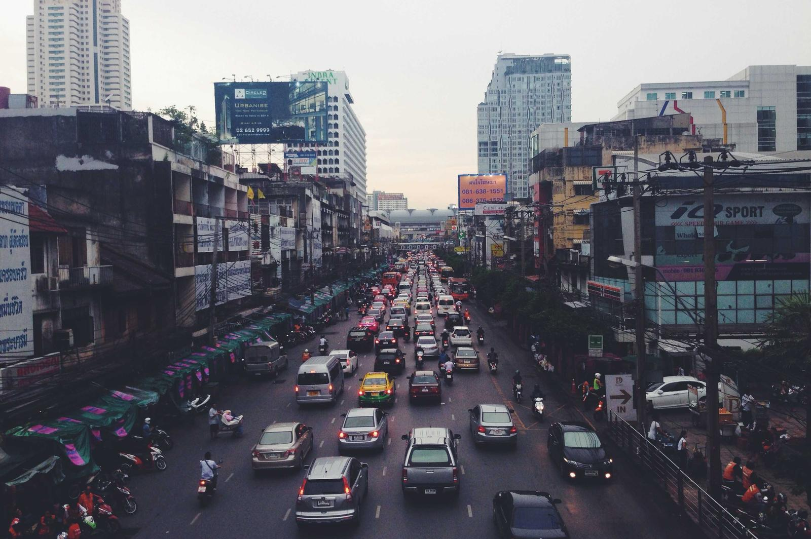
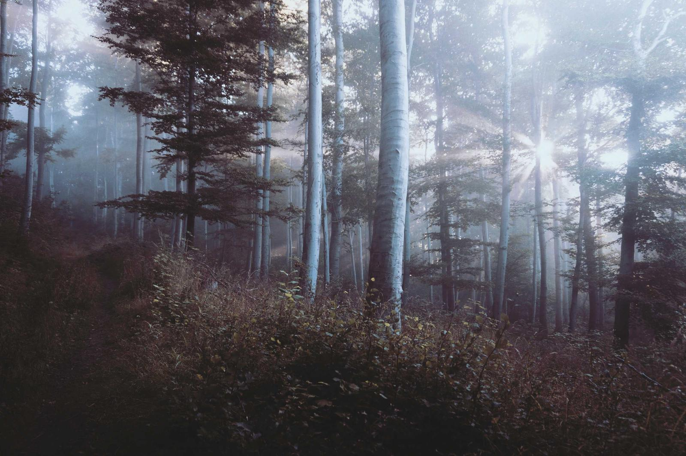
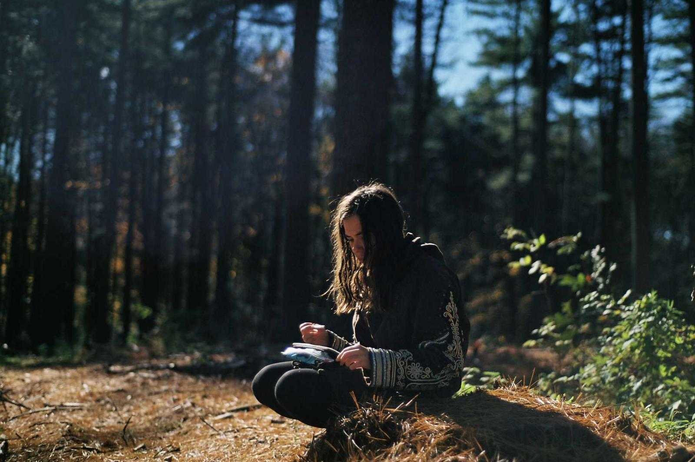

Cleanses
Made by hand.
Sold by hand.
1-day reset. 6 bottles · 32oz spring water · pickup or delivery. $89
3-day deep cleanse. 18 bottles · electrolyte support · coaching call. $245
Juice bar — Santa Cruz, CA.
Build your cleanse


1-day reset. 6 bottles · 32oz spring water · pickup or delivery. $89
3-day deep cleanse. 18 bottles · electrolyte support · coaching call. $245